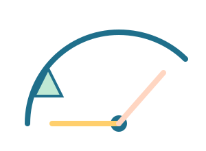

מה לומדים?
- מדידת זוויות עם מד־זווית.
- משולש שווה־שוקיים, שווה־צלעות, ישר־זווית.
- סכום הזוויות במשולש הוא 180 מעלות.
דוגמאות קצרות
ציירו שלושה משולשים שונים ותארו את סוגם במילים.
משימה ידנית
צרו משולש ישר־זווית בעזרת סרגל ומד־זווית.
לומדים לזהות זווית חדה, ישרה או קהה.

ציירו שלושה משולשים שונים ותארו את סוגם במילים.
צרו משולש ישר־זווית בעזרת סרגל ומד־זווית.